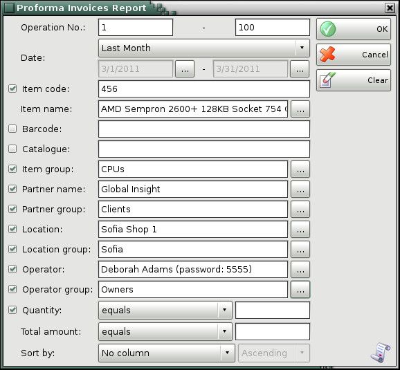
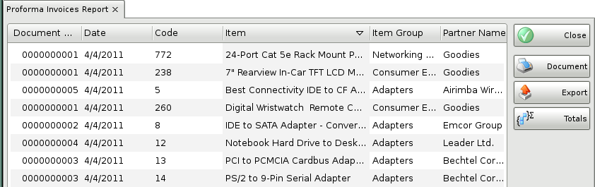

Proforma invoices report
The Proforma Invoices report displays the chronological order of issued proformainvoices and items, whereas no grouping or mathematical data processing is done. Thus each document can be displayed by rows and all documents can be displayed together. You can use the report to track actual data input by documents, by users, by dates, etc. without summarizing documents or items. Each row in the documents corresponds to a row in the report.
In the first window of the report specify the filter criteria and the fields that will be visualized.
Only rows that are checked are visualized in the report.

You can choose a filter for each field by pressing the F4 key.
You can limit the report to a single criterion � for example, visualize proforma invoices for a particular customer, or you can apply several criteria at a time � for example, visualize proforma invoices for a particular item for a particular customer for a particular period of time
To remove all specified filters, click the Clear button. The report will display all operations without any restrictions.
Click the OK button to generate the report using the specified criteria. Click Cancel to close the window.

Close button closes the report, Document button is used for report print preview, button Export to exports the report to CSV, Excel, Web Page or XML Data format and Totals button adds a line at the bottom of the window, that contains quantities and values amounts for each column.
�2006-2012 Microinvest, All rights reserved